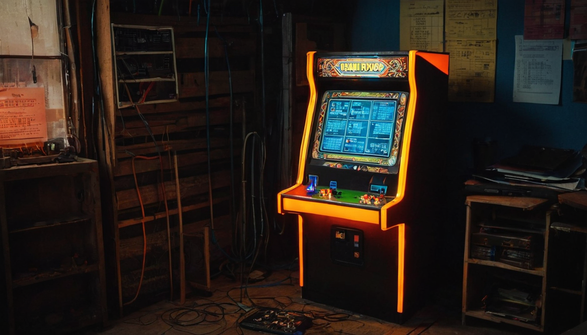
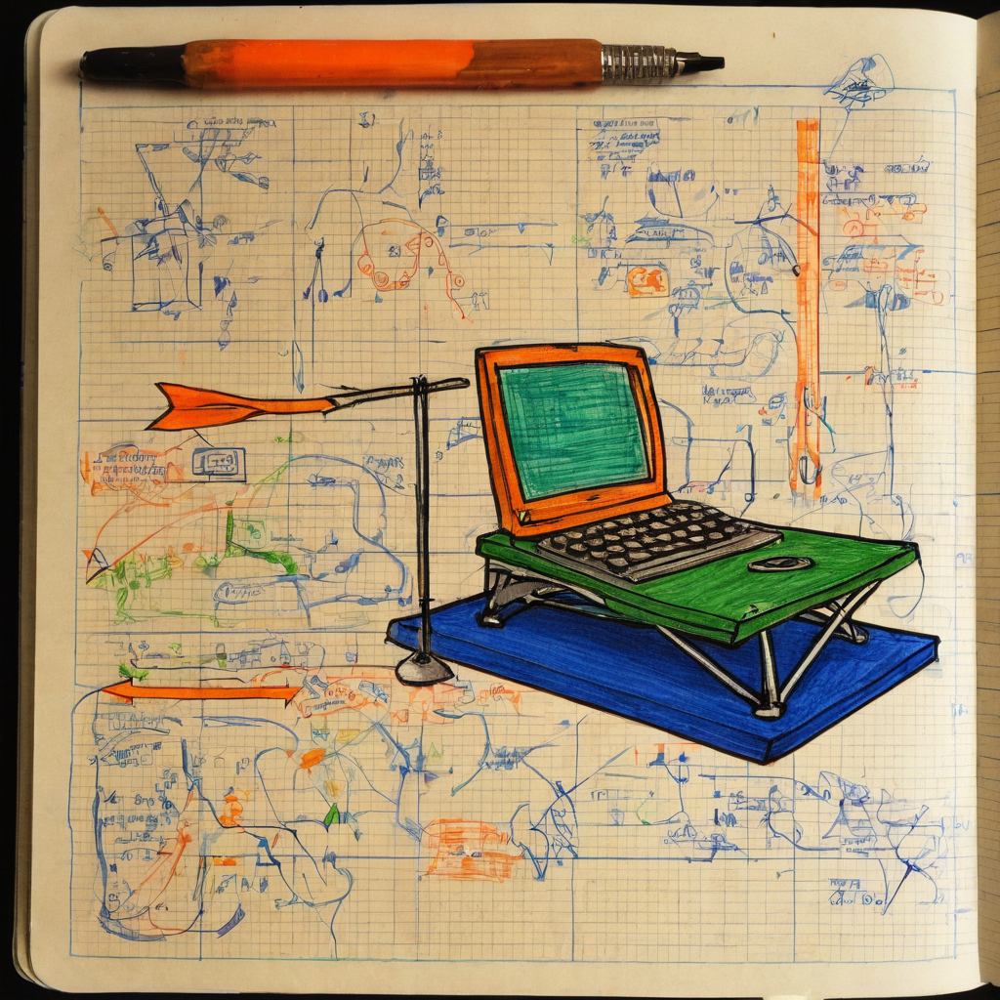

I stopped on this one because it is a slot machine that actually gives you something every time you pull the lever. That is rarer than it should be in NFT land, where a lot of "mint mechanics" are really just a fancy button that charges you money and hopes you feel lucky.
@Grizzle341 shared a quick post about spinning the MisFitz slot machine cabinet and landing a "REGULAR" result, which paid out 10 NFTs. The post frames it as a guaranteed-prize pull, meaning every spin returns something rather than a chance at nothing. The post links out to the cabinet itself and to the MisFitz site at misfitz.bricklayer.studio, and it tags the project account, @ChiaMisFitz. It is a short, upbeat "look what I just won" post, the kind of thing collectors post when a mechanic actually delivers.

NFT projects on Chia have been experimenting for a while with ways to make minting and collecting feel less like a static jpeg drop and more like an actual interaction. A slot machine with guaranteed prizes is a simple idea, but it changes the emotional shape of the experience. Instead of "did I get anything," the question becomes "what did I get," which is a friendlier way to run a drop and a smarter way to keep people coming back to spin again.
This also fits a pattern I keep noticing in the Chia NFT space: small teams building playful, game-like layers on top of straightforward NFT infrastructure instead of chasing complicated financial mechanics. That is a good direction for a chain that has always leaned toward being practical over hype-driven.
What it does: the MisFitz cabinet is a spin mechanic tied to NFT rewards. Based on the post, pulling the lever guarantees some kind of prize, with different outcome tiers (REGULAR being one of them) determining how much you walk away with.
Who it helps: collectors who want an interactive way to acquire NFTs instead of a plain mint button, and it gives the MisFitz project a built-in reason for people to keep engaging with the cabinet rather than minting once and leaving.
Why builders should care: if you are thinking about how to make a collectible drop feel alive, this is a good real-world example of gamifying distribution without needing a whole game studio behind it. A cabinet, a pull animation, and a reward table can go a long way.
What still needs work (or just isn't known yet): the post does not spell out the odds, the full tier structure, or what a non-guaranteed pull would even look like since every pull seems to pay out. Anyone curious about the actual mechanics should check the linked site directly rather than assume anything not stated in the post.
I like this because it is the kind of mechanic that makes collecting feel like something instead of just a transaction. Chia's NFT scene has a lot of people quietly building fun, small, well-made things instead of chasing the next big financial gimmick, and a slot cabinet that guarantees a prize every pull is exactly that kind of energy. It is playful without pretending to be more than it is.
I do not have the full breakdown of tiers or odds in front of me, so I am not going to guess at numbers the post did not give. But the core idea, guaranteed rewards instead of pure chance, is a smart, collector-friendly choice, and I am glad to see @Grizzle341 having a good pull and @ChiaMisFitz building something people actually want to interact with.
I would keep an eye on how the MisFitz cabinet evolves, whether more tiers or cabinet variations show up, and how the community responds over time. Mechanics like this tend to get more interesting once a project has run enough spins for a real pattern to show up. Worth checking the linked site if you want to see the cabinet and the reward structure for yourself.
Source: X post by @Grizzle341, https://x.com/i/web/status/2077540482675322957, retrieved on 2026-07-15. External references: MisFitz site, https://misfitz.bricklayer.studio